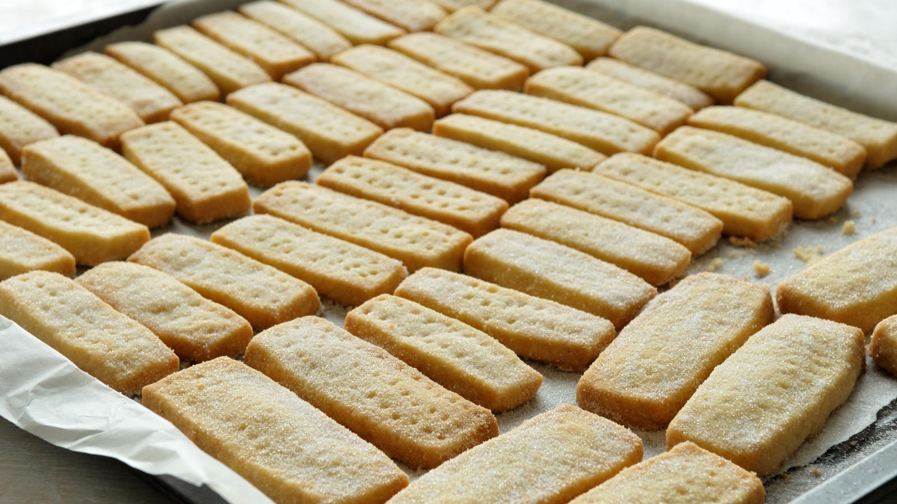
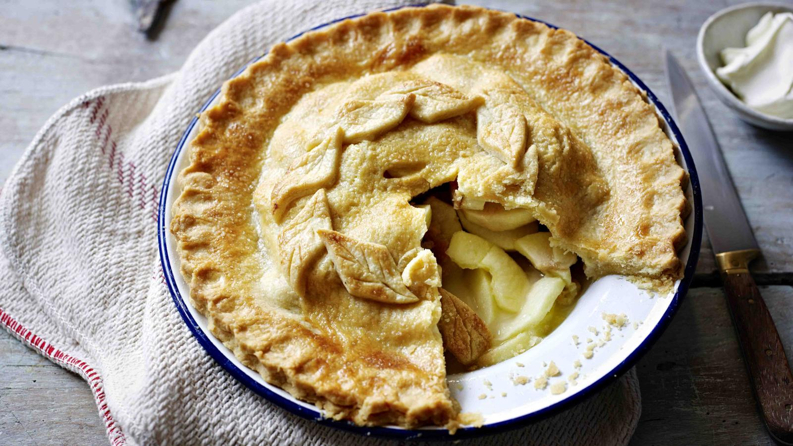

RECIPES
Hope you find some useful Recipes within our blog to get you through Lockdown !
This page aims to page you find some tasty treats to enjoy this Autumn !
Autumn Snacks
Here are some fun Autumn snacks you can try out during Lockdown! Click the links to take you to the recipes!
Shortbread Recipe
In Scotland on the 30th of November, we celebrate St Andrew's Day! So here is an easy Shortbread recipe to celebrate!

Ingredients
- 125g/4oz butter
- 55g/2oz caster sugar
- 180g/6oz plain flour
Method
- Preheat the oven to 190C/375F/Gas 5
- Beat the butter and the sugar together until smooth.
- Stir in the flour to get a smooth paste. Turn on to a work surface and gently roll out until the paste is 1cm/½in thick.
- Cut into rounds or fingers and place onto a baking tray. Sprinkle with caster sugar and chill in the fridge for 20 minutes.
- Bake in the oven for 15-20 minutes, or until pale golden-brown. Set aside to cool on a wire rack.
Apple Pie Recipe

Ingredients
- 225g plain flour
- 140g butter or margarine
- 3 large cooking apples
- 2 tbsp honey
- pinch of cinnamon
- pinch of mixed spice
- 1 egg, beaten
- crème fraîche, vanilla ice cream or natural yogurt, to serve
Method
- Heat oven to 200C/180C fan/gas 6. To make the pastry, sift the flour into a large mixing bowl and add the butter or margarine. Using your fingers, mix together until the mixture resembles breadcrumbs.
- Add about 3 tbsp cold water – 1 tbsp at a time – to bind the mixture into a ball. Then wrap it in cling film and leave to chill in the fridge while you prepare the apples, or for 30 mins if you have time.
- While the pastry is chilling, core the apples, then cut into even-sized chunks so they all cook in the same amount of time. Put the apples into the pie dish, drizzle over the honey and add the cinnamon, mixed spice and about 2 tbsp water.
- Roll out the pastry on a floured work surface until it is large enough to cover the pie dish. Using the rolling pin, carefully lift the pastry and lay it over the top of the apple mixture. Carefully trim off the excess pastry (this can be rerolled and cut into shapes to decorate the pie crust if you like) and press the pastry edges onto the dish to create a seal.
- Make a small cut in the pastry so that the air can escape during cooking, then brush with beaten egg to glaze.
- Bake the pie in the oven for 20-30 mins until the pastry is golden and sandy in appearance and the apple filling is bubbling and hot. Serve while still warm with crème fraîche, ice cream or natural yogurt.